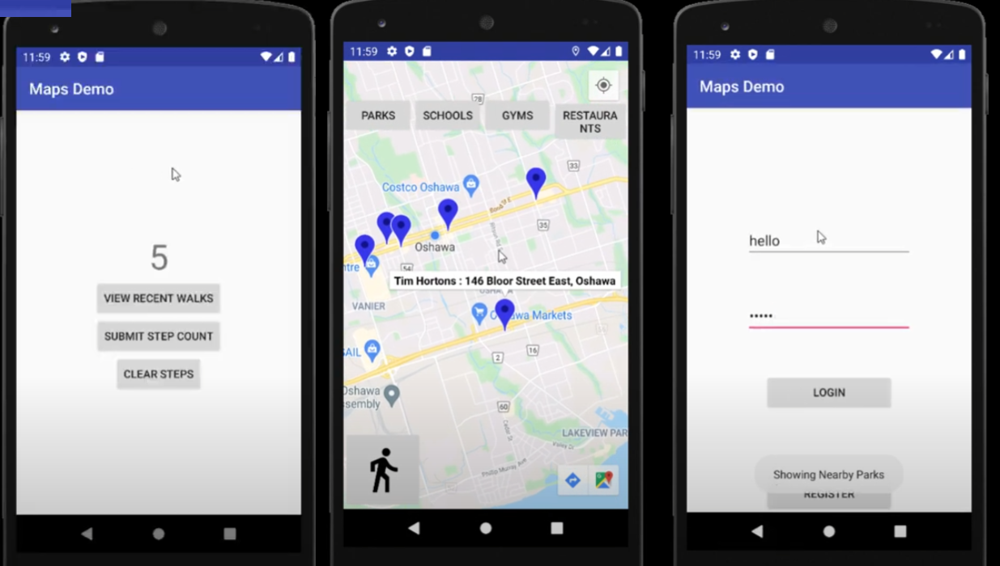

Android application for tracking steps and location
The app provides a comprehensive experience for individuals who enjoy walking to nearby locations and tracking their steps. While it is suitable for anyone, it specifically targets city dwellers who tend to walk more frequently. The app simplifies the process of finding nearby places, setting routes, and tracking step counts. Additionally, it saves each user's step count progress, ensuring that their walking data is never lost.
integrated the Google Maps API to display maps within their app. By obtaining the user's latitude and longitude, the app centers the map on the user's location. Users can select a desired waypoint and initiate a route using Google Maps. The app also leverages the user's latitude and longitude to find nearby locations through the Google Places API.
integrated the Google Places API to display locations near the user. They implemented four buttons, each showcasing different location types (restaurants, gyms, schools, and parks). Although the Google Places API can list numerous additional locations, the team could not incorporate all of them. Ideally, a dropdown menu would have been included to provide access to all available place types.